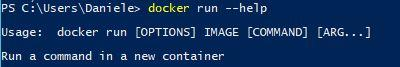
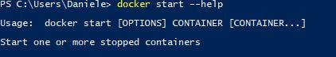

Difference between Running and Starting a Docker container
In practice to start a container I do:
docker run a8asd8f9asdf0
If thats the case, what does:
docker start
do?
In the manual it says
Start one or more stopped containers
Answer
This is a very important question and the answer is very simple, but fundamental:
- Run: create a new container of an image, and execute the container. You can create N clones of the same image. The command is:
docker run IMAGE_IDand notdocker run CONTAINER_ID

- Start: Launch a container previously stopped. For example, if you had stopped a database with the command
docker stop CONTAINER_ID, you can relaunch the same container with the commanddocker start CONTAINER_ID, and the data and settings will be the same.

Suggest
-
runruns an image -
startstarts a container.
The docker run doc does mention:
The
docker runcommand first creates a writeable container layer over the specified image, and then starts it using the specified command.That is, docker run is equivalent to the API
/containers/createthen/containers/(id)/start.
You do not run an existing container, you docker exec to it (since docker
1.3).
You can restart an exited container.